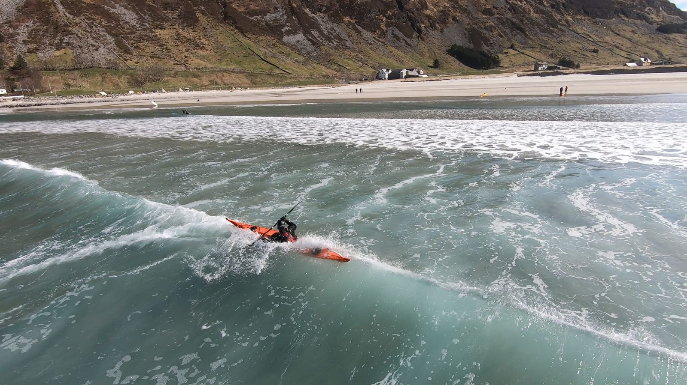

Gradering av forhold
NPFs graderingssystem, basert på British Canoeing sitt star-system, tilpasset norske forhold. Lær å vurdere farvann og forhold for trygg padling.

Forhold og farvann
To begreper som til sammen bestemmer graden. For å vurdere riktig, må du forstå forskjellen.
- Bølger og strøm akkurat nå
Forhold beskriver de dynamiske faktorene som endrer seg med vær og vind. Det er hva som skjer på sjøen i det øyeblikket du padler.
- Vind
- Bølger
- Bråttsjø / topografi
- Strøm
- Dønninger
- Annen trafikk
- Hvor eksponert er området?
Farvann beskriver eksponeringsnivået til selve området. Hvor mye beskyttelse gir øyer, holmer og skjær? Hvor langt er det til land? Dette endrer seg ikke med været.
- Luft- og vanntemperatur: kald-sjokk-risiko og hypotermitid ved velt
- Dagslys: synlighet og tid til rådighet ved hendelser
- Tåke: redusert sikt og navigasjonsutfordringer
Viktig prinsipp: Den mest utfordrende enkeltfaktoren bestemmer graden. Selv om de fleste faktorene tilsier grad 2, holder det at bølgene tilsier grad 3 for at totalgraden blir 3.
Fem grader fra skjermet til svært eksponert
Hvert nivå bygger på det forrige. Forholdene blir progressivt mer krevende, og krever tilsvarende mer erfaring og kompetanse.
Hele stjernesystemet samlet i én PDF, med et hurtigoversiktsark du kan skrive ut og ha med i kartmappa.
- Grad 1Svært skjermet farvann
Lite havnebasseng eller liten bukt
Ingen strøm, ingen trafikk. Stille og beskyttet farvann der det knapt er bølger. Ideelt for nybegynnere.
- Beaufort 1 — Flau vind, 1–3 knop (0,5–1,5 m/s)
- Sjøgang 1
- Bølger : Opp til 0,1 m
Passer for: Introkurs
- Grad 2Skjermet farvann
Indre skjærgård
Små krusninger ved steiner og skjær. Svært lite strøm, lite trafikk. Beskyttet av øyer og holmer.
- Beaufort 2 — Svak vind, 4–6 knop (2–3 m/s)
- Sjøgang 2
- Bølger : Opp til 0,5 m
Passer for: Grunnkurs
- Grad 3Noe eksponert farvann
Farvann nær land med små øyer og skjær utenfor
Små bråttsjøer ved grunner. Strøm og sjø kan gi noe drag. Annen trafikk forventes. Krever god teknikk og vurderingsevne.
- Beaufort 4 — Laber bris, 11–16 knop (5,5–8 m/s)
- Sjøgang 3
- Bølger : 0,5–1,25 m
Passer for: Teknikkurs / Aktivitetslederkurs
- Grad 4Eksponert farvann
Farvann nær land uten små øyer og skjær utenfor
Bråttsjøer ved grunner. Strøm og sjø gir drag og uregelmessige formasjoner. Været kan endre seg raskt. Trafikk forventes.
- Beaufort 5 — Frisk bris, 17–21 knop (8,5–10,5 m/s)
- Sjøgang 4
- Bølger : 1,25–2,5 m
Passer for: Videregående / Veilederkurs
- Grad 5Svært eksponert farvann
Lange kryssinger i rom sjø, eller utsatt farvann langs land
Sterke bråttsjøer. Sterke uregelmessige formasjoner. Været kan endre seg svært raskt. Trafikk forventes. Kun for svært erfarne padlere.
- Beaufort 6 — Liten kuling, 22–27 knop (11–14 m/s)
- Sjøgang 5
- Bølger : 2,5–4 m
Hvordan vurdere forholdene?
Tre steg for å avgjøre om det er trygt å legge ut.
- 1. Samle riktige data
Sjekk bølgehøyde, vindstyrke, strømforhold og andre faktorer fra pålitelige kilder som Yr, BarentsWatch og tidevannstabeller.
- 2. Kombiner faktorene
Hvordan samspiller elementene? Kan det bli verre? Hvor eksponert er du? Den mest utfordrende faktoren bestemmer graden.
- 3. Vurder din kompetanse
Er du rustet for disse forholdene? Har du riktig utstyr, erfaring og redningskompetanse for graden du vurderer?
Vil du lære å vurdere forhold?
Start med et kurs og bygg kompetansen din steg for steg. Fra grunnleggende padleteknikk til avansert værvurdering og forholdsvurdering.
Graderingssystemet er basert på Norges Padleforbunds (NPF) tilpasning av British Canoeing sitt star-system for havkajakk. Innholdet er tilpasset og presentert av Kajakkguiden for informasjonsformål.